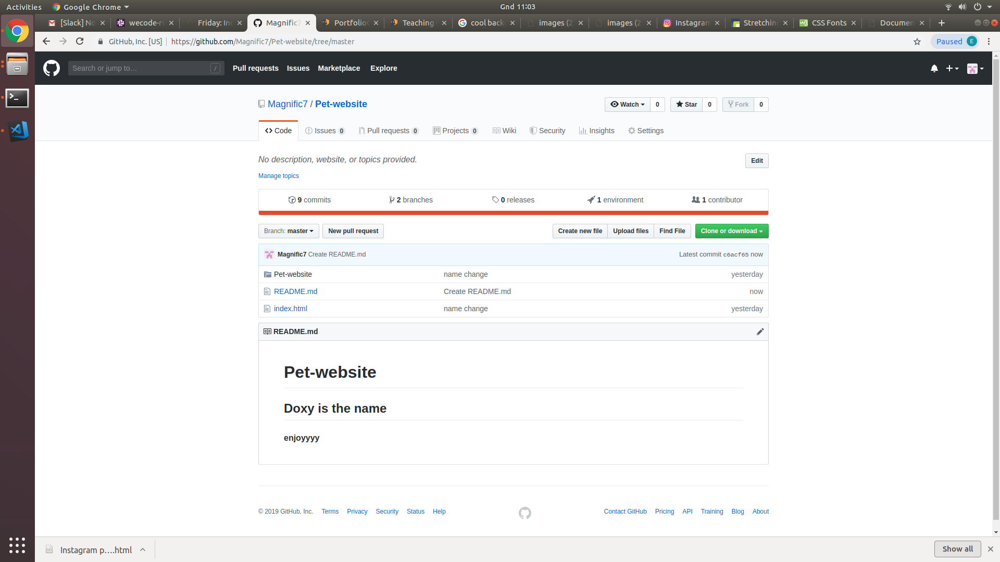

My projets
The following are a few of the projects I have worked on so far.
Fan page

This is a fan page for an English singer and song writer
called James Andrew Arthur commonly known as James Arthur .
The page talks about James Arthur's detailed profile that
is to say his background,age ,occupation and more related to his
music career.
Pets website
This is a website about my pet, it is called Doxy and it is a dog .
the web site talks about its favorite activities or games if I would say
It also shows track of its growing and how it gains weight as it grows older.